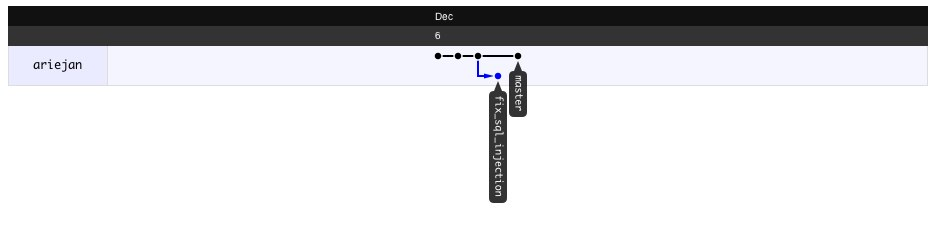
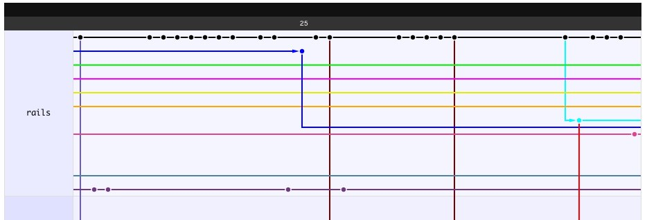

Training Edubhub
Dag 1 - Git, OTAP, Intro testen
Over mij
Ariejan de Vroom
- Ruby on Rails Developer sinds 2006
- Java, Objective-C, etc.
- Email: ariejan@kabisa.nl
Agenda
- Git Basics
- OTAP
- Unit Testing
Git Basics
Naming git
“I'm an egotistical bastard, and I name all
my projects after myself. First Linux. Now git”
- Linus Torvalds
Git Basics
Why git?
- Distributed
- Non-linear
- Very fast branching and merging
- Scales with your project
Linux Kernel 2.6.35 has 13.5 million lines of code, and is managed with git
Git Basics
Hack, add, commit, review, repeat
Every day git
git initgit addgit statusgit commitgit log
Git Basics
The Index
What's the index? Or, how does a commit work?
Git Basics
Branching and Merging
Branching and merging are cheap!
git checkout -b new_branchgit merge some_branch
No data is duplicated when branching (unlike Subversion)
Merging uses changesets, not entire files
Git Basics
So branching is cheap?
Why should I care?
- It's fast. You love fast!
- Try new things without any hassle
- Keep different code paths separate with ease
Git Basics
Bug and Feature Branches
Every bug and every features its own branch!
- Allows you to work in peace
- Don't clutter the
masterbranch - Merge when ready
Git Basics
Branching
Creates a new branch of commits
Git Basics
What does branching look like?

Git Basics
What does branching look like?

Git Basics
Merge
Merge the changes of another branch into a new commit.
git merge branch_name
Merge always creates a new commit, unless there are merge conflicts.
» Manually resolve the conflicts and commit.
Git Basics
Merging
Merge to branches of commits into one.
Git Basics
Tags
Mark a point in time you want to remember.
git tag -a -m "Tagging our first release" v1.0
Tags are cheap too!
Git Basics
Tags
Git Basics
Remember, remember!
Some checkout commands to remember.
git clone repositorygit checkout branch_namegit checkout revisiongit checkout tag
Git Basics
Fetch, Pull and Push
Communicate with other repositories.
git add remote kabisa http://git.kabisa.nl/some_repo.gitgit fetch kabisa mastergit pull kabisa mastergit push kabisa master
Git Basics
Rebase
Pull new commits from the parent branch.
git rebase master
Rebase undoes your commits, applies the commits from the parent branch, and then replays your work.
Never rebase a branch that you share with others (e.g. you pull or push)
Rebase local branches only!
Git Basics
Rebase
Before git checkout -b feature_x
Git Basics
Rebase
After git rebase master
Git Basics
Exercise
Work alone or in pairs
- Clone (or fork+checkout):
http://github.com/ariejan/sample_cms - Pick a TODO (or invent your own feature/fix) and start work!
The fun part is to create conflicts, tags and branches!
Good luck!
OTAP
What's 'OTAP'?
OTAP is a Dutch abbreviation.
- Ontwikkling (development)
- Test (test)
- Acceptatie (staging)
- Productie (production)
The goal of OTAP is to have four different application states at any given time.
OTAP
OTAP + Git = Branches!
Is the OTAP approach compatible with git?
Yes, it is!
- Development -
master - Test -
test - Staging -
staging - Production -
production
OTAP
How the git?!
You already have master
Branch and push test, staging and production.
Use the appropriate branch when doing your work.
In some scenarios it's okay to branch production to apply and test a fix for a critical bug. Just make sure you apply the
your changes back to the other branches.
OTAP
Exercise
- Setup your remote repo, preferably using CodebaseHQ
- Create and push the
test,stagingandproductionbranches. - Add a new feature, walk through the OTAP process
Testing
Why test?
Why should I test my code?
- Prove your code works
Testing
What flavour would you like?
You can test your application on different levels.
- The business and application logic
- The database (keys, relations, fields, etc.)
- The user experience
- Integration (API)
Unit Testing
I'd love to test, but...
There are hundreds of reasons not to test.
- Writing tests takes more time than writing the actual code
- Maintaining tests takes a lot of effort, especially when refactoring
- Reaching 100% test coverage is impossible, why bother?
- My tests take too long to run, I removed them.
- We have tests, but there are still bugs!
- Stress! We need to deliver tomorrow!